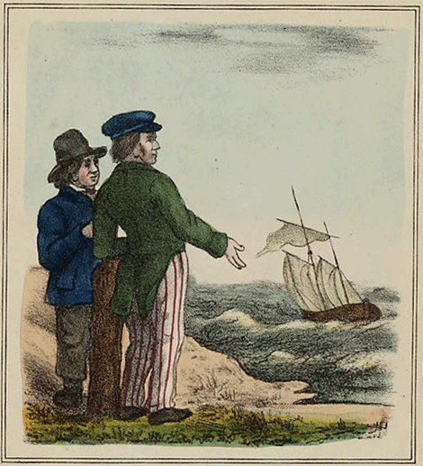

De beste Stuurlui staan aan Wal
"De beste stuurlui staan aan wal" wordt gebruikt om aan te geven dat mensen die niet actief betrokken zijn bij een situatie vaak gemakkelijk kritiek kunnen leveren op het werk van anderen. Het impliceert dat het gemakkelijker is om vanaf de zijlijn advies te geven dan daadwerkelijk in actie te komen.
Oorsprong
De oorsprong van dit spreekwoord ligt in de maritieme wereld, waar toeschouwers op de wal vaak commentaar gaven op de handelingen van de zeelieden. Het idee is dat mensen buiten een situatie gemakkelijker kunnen oordelen dan degenen die er daadwerkelijk mee te maken hebben.
Gebruik
Dit spreekwoord wordt vaak gebruikt om aan te geven dat het gemakkelijk is om kritiek te hebben op anderen zonder zelf actie te ondernemen. Het wordt zowel in informele als professionele contexten gebruikt.
Voorbeelden
- Ze hadden veel te zeggen over hoe het project had moeten worden uitgevoerd, maar zoals altijd, de beste stuurlui staan aan wal.
- Hij wist dat er veel mensen kritiek zouden hebben, maar hij negeerde hen, wetende dat de beste stuurlui aan wal staan.
Vertalingen
Hoewel dit spreekwoord specifiek is voor de Nederlandse taal, zijn er vergelijkbare uitdrukkingen in andere talen. In het Engels wordt soms gezegd: armchair critic (kritiek leveren vanuit je luie stoel).